このハンズオンでは、Firebase で簡単なファイル共有サービスをつくります。
サンプルアプリ :
https://cloud-file-share-12175.firebaseapp.com/
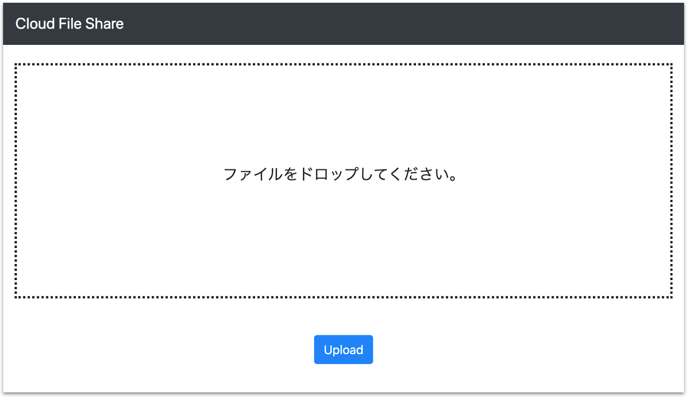
下のボタンから Cloud Shell を開きます。
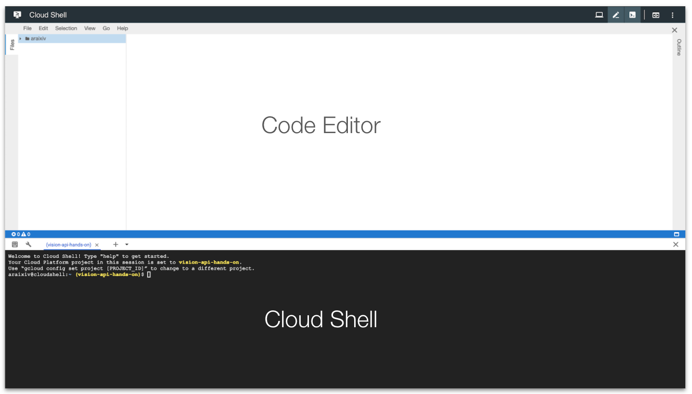
ディレクトリ構成はこんな感じです。
cloud-share-file
├── LICENSE
├── README.md
├── firebase.json
├── firestore.indexes.json
├── firestore.rules
├── functions
│ ├── index.js
│ ├── package-lock.json
│ └── package.json
├── public
│ ├── 404.html
│ ├── favicon.ico
│ ├── index.html
│ ├── scripts
│ │ └── index.js
│ └── styles
│ └── index.css
└── storage.rules石丸 諒(Ryo Ishimaru)
アプリ開発のためのクラウド mBaas (mobile Backend as a Service)
Choosing the right compute option in GCP: a decision tree
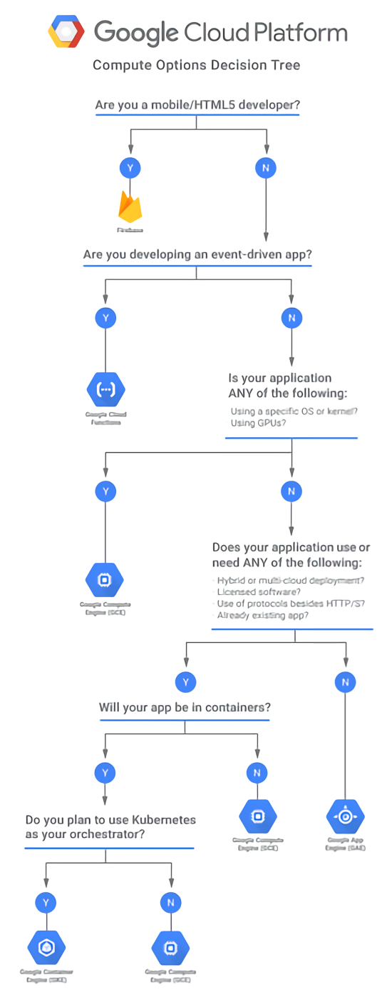
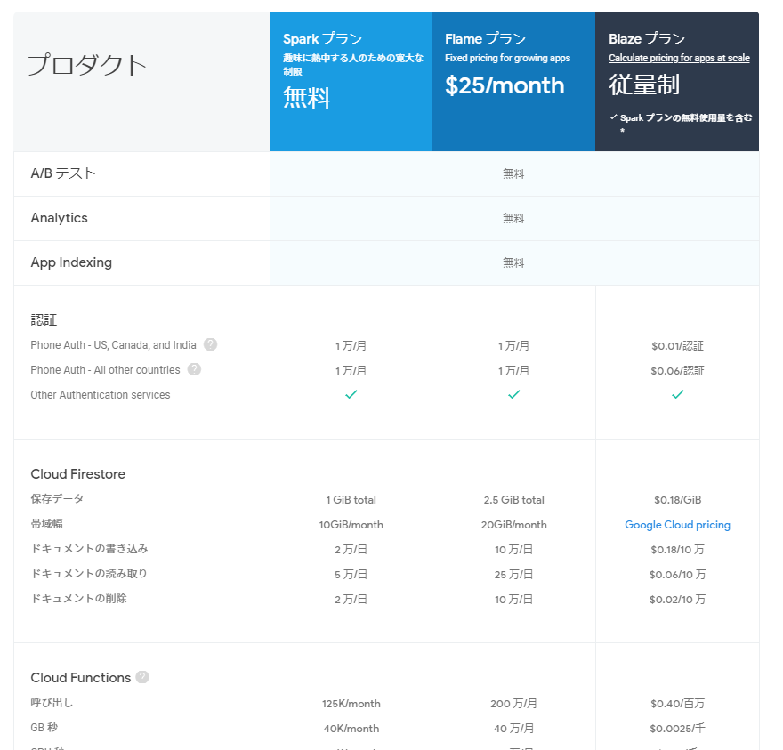
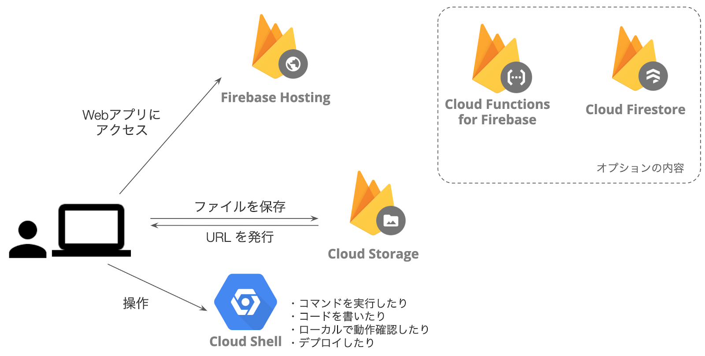
コードの記述やデプロイ作業は全てCloud Shellから実行します
下のボタンから Cloud Shell を開きます。
ディレクトリ構成はこんな感じです。
cloud-share-file
├── LICENSE
├── README.md
├── firebase.json
├── firestore.indexes.json
├── firestore.rules
├── functions
│ ├── index.js
│ ├── package-lock.json
│ └── package.json
├── public
│ ├── 404.html
│ ├── favicon.ico
│ ├── index.html
│ ├── scripts
│ │ └── index.js
│ └── styles
│ └── index.css
└── storage.rulesFirebaseのコンソールを開き、「プロジェクトを追加」を選択。
好きなプロジェクト名を入力して「続行」を選択。
Google アナリティクスは無効にして作成。
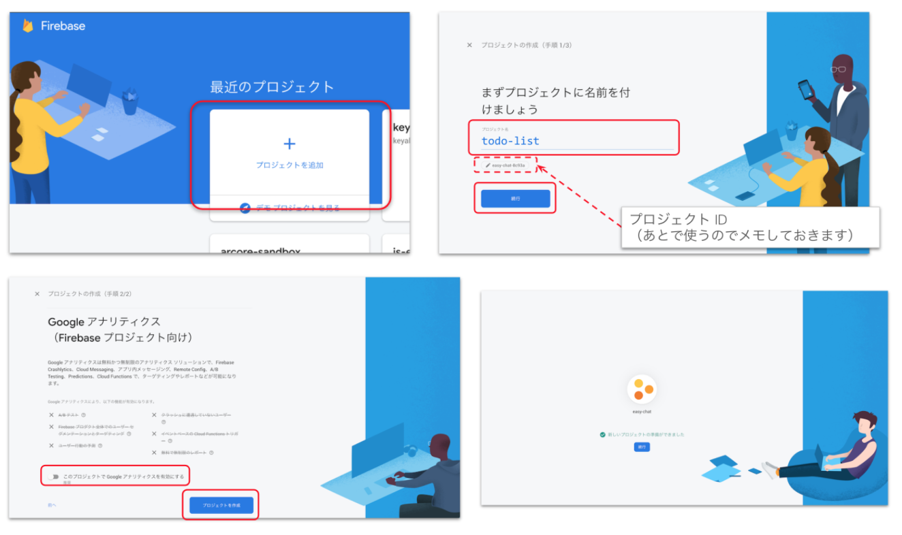
Cloud Shell で以下のコマンドを実行します。
CloudShell
firebase logout
firebase login --no-localhostURLからプロジェクトの作成と同じアカウントでログインし、出力コードをペーストして処理を完了させます。
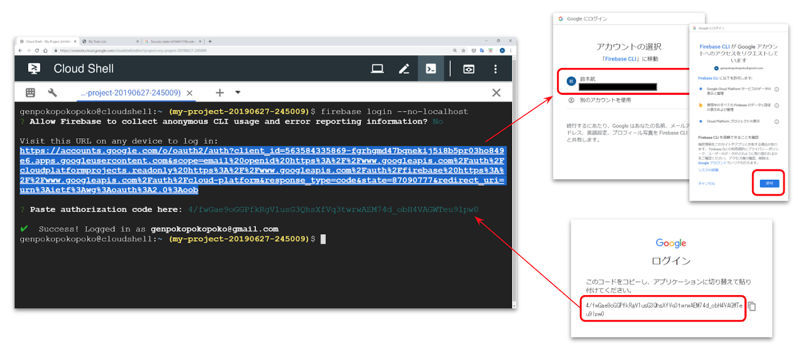
次のコマンドで作成したプロジェクトを設定します。
CloudShell
firebase use <PROJECT_ID> // <PROJECT_ID>はさっきメモしたものに書き換えますプロジェクトIDは「プロジェクトを設定」から再確認できます。
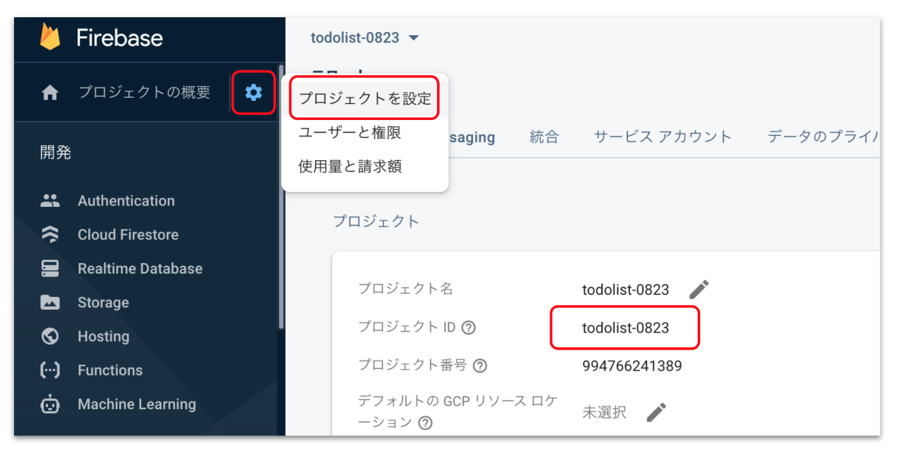
以下の確認コマンドで正しいプロジェクトに (current) とついていればOKです。
CloudShell
firebase projects:list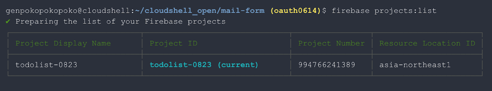
Firebaseではアプリという単位でリソースを管理します。
コンソール画面のwebマークを選択してアプリを追加。
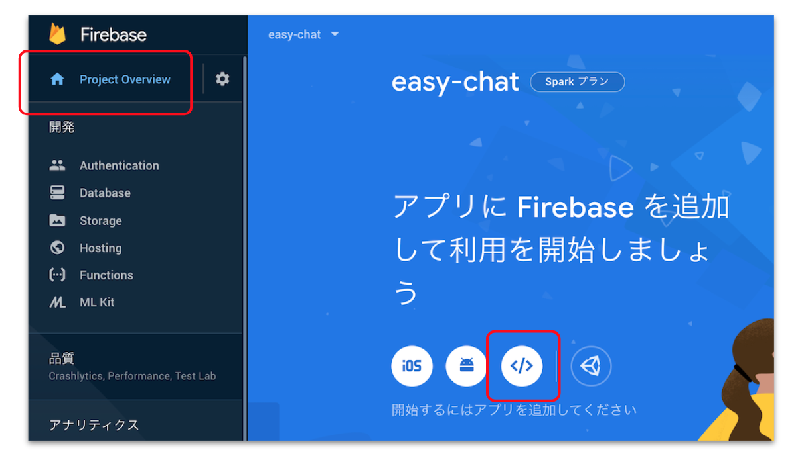
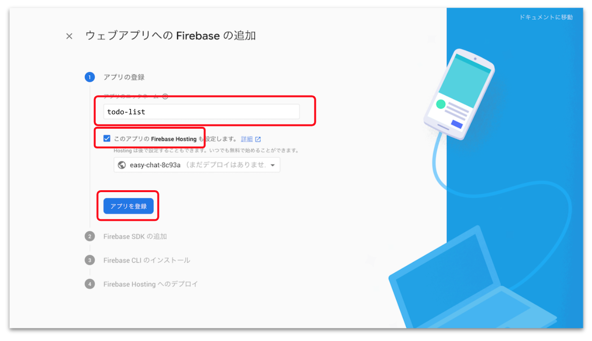
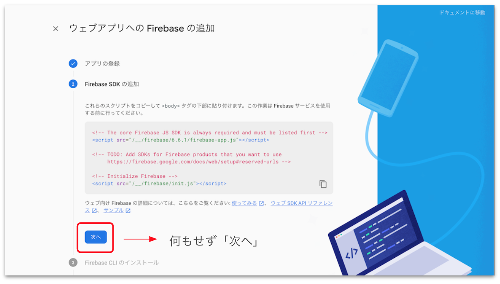
Cloud Shell で以下のコマンドを実行します。
CloudShell
firebase serve --only hosting --port 8080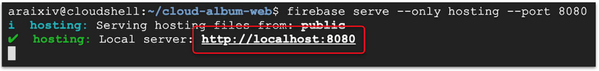
出力されたURLをクリックしてこんな画面が表示されたらOK。(まだファイル共有はできない)
ファイルを保存するため、Cloud Storage の設定を修正します。
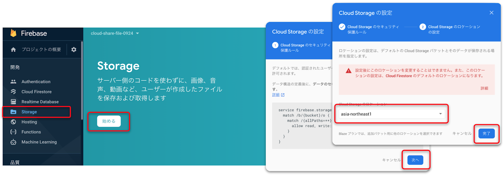
認証なしでアクセスできるように書き換えます
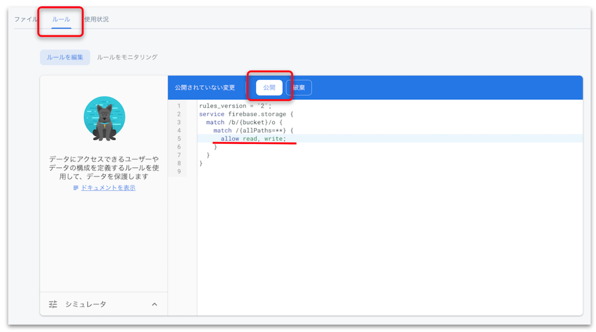
ルールを編集
rules_version = '2';
service firebase.storage {
match /b/{bucket}/o {
match /{allPaths=**} {
allow read, write;
}
}
}public/scripts/index.js: L.100 //TODO:アップロード処理を実装
部分を以下のコードに書き換えます。
const imageRef = this.storageRef.child(`files/${this.fileName}`);
const uploadTask = imageRef.put(this.file);
uploadTask.on('state_changed', (snapshot) => {
// TODO: プログレスを表示
}, (error) => {
}, () => {
console.log('Upload finished!')
// TODO: URL 取得処理
});こんな感じになります
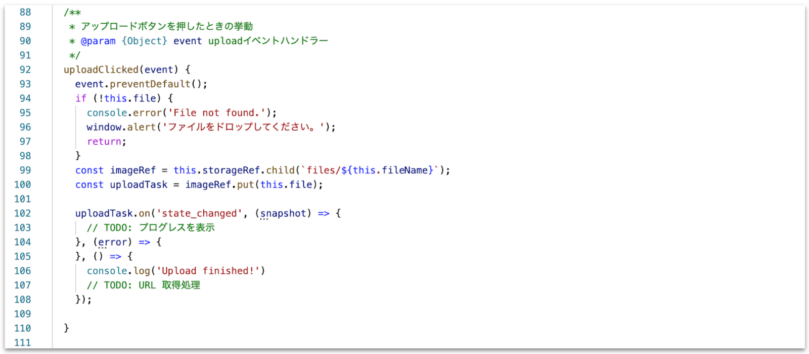
試しにファイルをアップロードしてみます
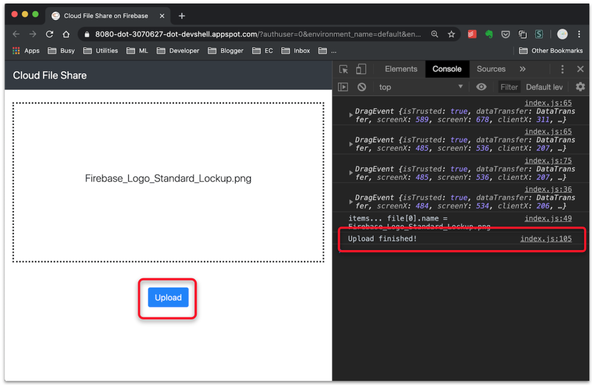
Firebase のコンソールから、アップロードされていることが確認できます。
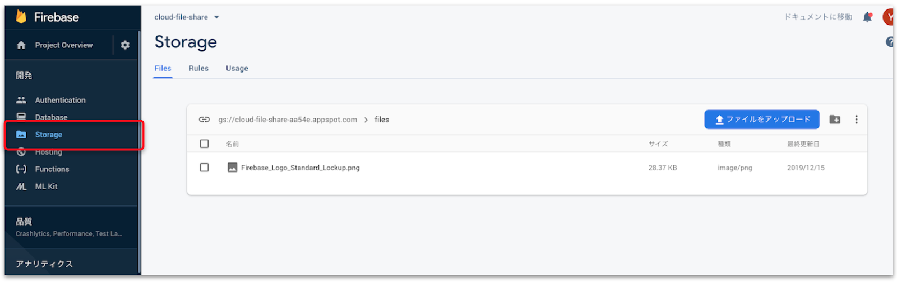
scripts/index.js L.103 //TODO:プログレスを表示
の部分を以下に書き換えます
// TODO: プログレスを表示
let progress = (snapshot.bytesTransferred / snapshot.totalBytes) * 100;
console.log('Upload is ' + progress + '% done');
this.fileLink.innerHTML = `<div class="justify-content-center">${progress}% done</div>`;
switch (snapshot.state) {
case firebase.storage.TaskState.PAUSED:
console.log('Upload is paused');
break;
case firebase.storage.TaskState.RUNNING:
console.log('Upload is running');
break;
}ファイルをアップロードしてみましょう
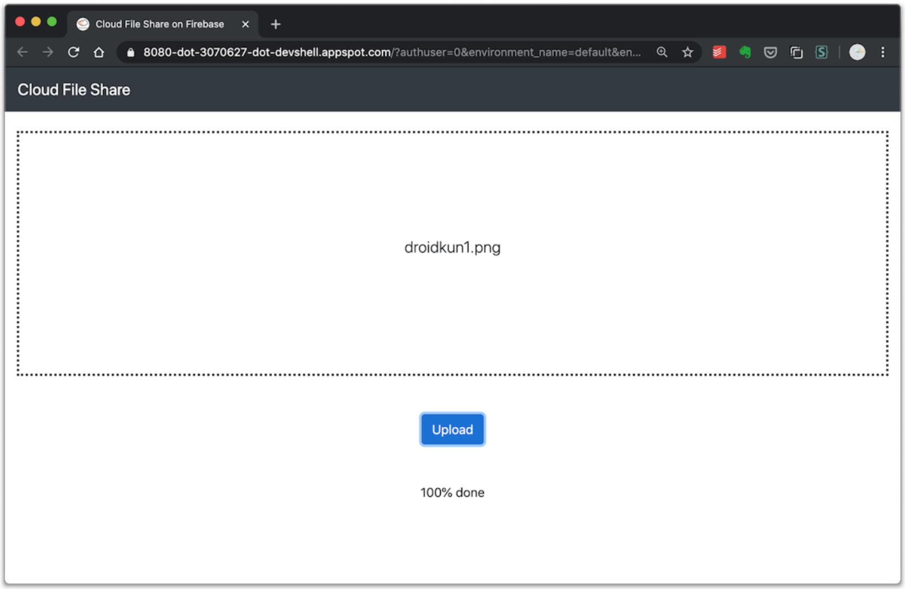
アップロードしたファイルを共有するための URL を取得する処理を記述します。
scripts/index.js L.118 //TODO:URL取得処理
の部分を以下で書き換えます。
// TODO: URL 取得処理
uploadTask.snapshot.ref.getDownloadURL().then((downloadURL) => {
console.log('File available at', downloadURL);
this.fileLink.innerHTML = `<a target="_blank" href="${downloadURL}">${downloadURL}</a>`;
});ファイルをアップロードしてみましょう
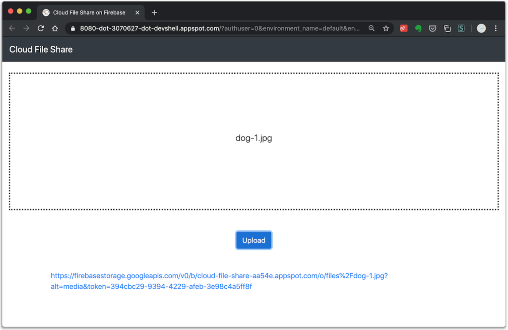
Firebase Hosting にデプロイします。
CloudShell
firebase deploy --only hosting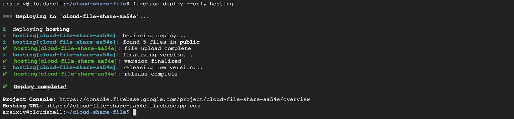
自動的に URL が振られ、どこからでもアクセス可能！
Firebase Hosting
データのアプロードログがFirestoreへ保存されるようにします。
Firestoreを有効化します。
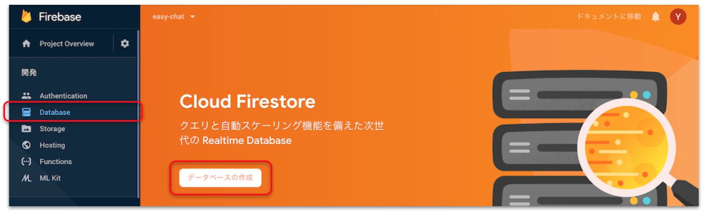
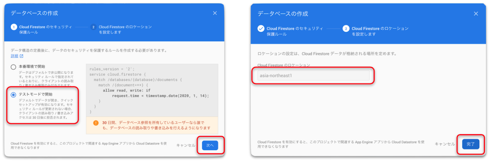
Cloud Functions をデプロイします。
CloudShell
cd ~/cloud-share-file/functions/
npm install
firebase deploy --only functionsCloud Functions の関数が作成されたことを確認します。
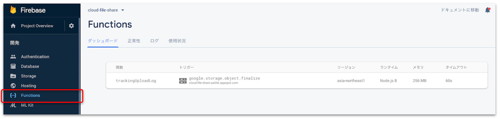
ファイルをアップロードすると、ログが Firestore に保存されるようになりました！
再デプロイ後、実際にファイルをアップロードして動作を確認してみましょう！
CloudShell
firebase deploy --only hosting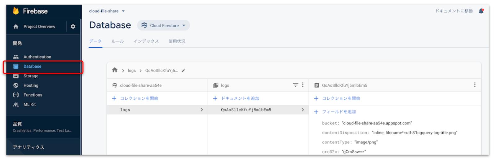
Firebaseを使ってログイン機能つきのファイル共有サービスを作成することができました！
複雑そうな処理もFirebaseを使えば簡単に実装できることが実感できたかと思います。
ここから先は各自思い思いに改良してみてください。
最後にアンケートがありますので、より良い勉強会作りのためにご協力お願い致します。